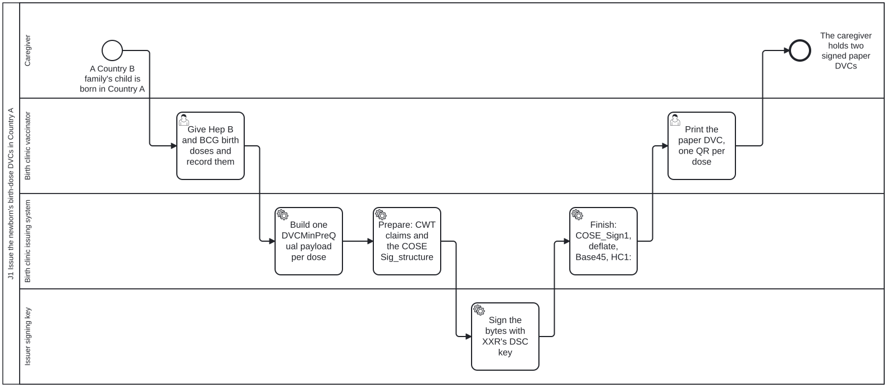
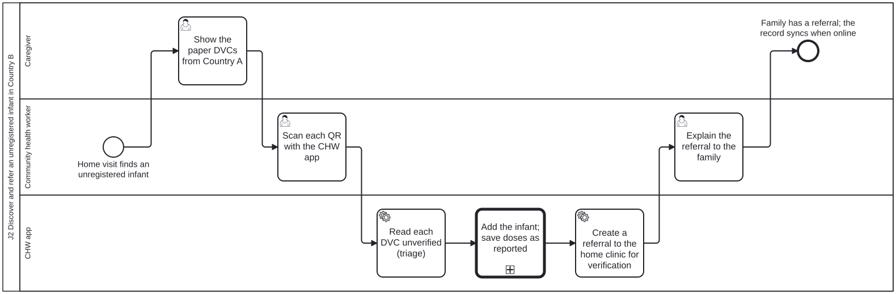
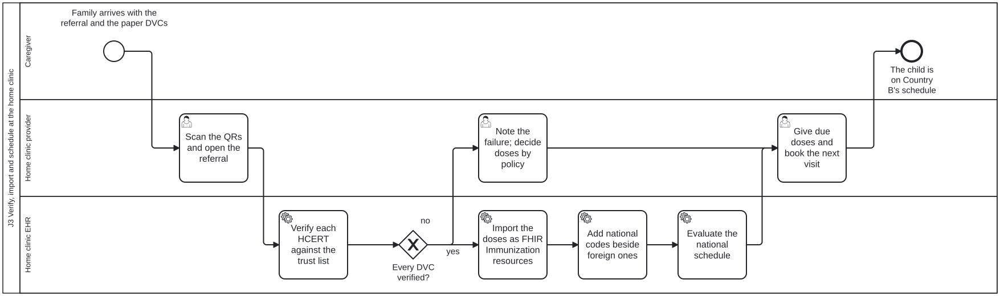

One business process per journey. Each lane is a role on the personas page; each task names the skill that performs it. The BPMN source of each process is in processes/content/, copied into the guide as input/business-processes/. Select a step’s title to open it, or open a process in the process viewer, which lists each task and the skill that performs it.
| Process | Lanes | BPMN |
|---|---|---|
| J1 Issue the newborn’s birth-dose DVCs in Country A | Caregiver, Birth clinic vaccinator, Birth clinic issuing system, Issuer signing key | j1-birth-dose-dvc.bpmn |
| J2 Discover and refer an unregistered infant in Country B | Caregiver, Community health worker, CHW app | j2-chw-discovery-referral.bpmn |
| J3 Verify, import and schedule at the home clinic | Caregiver, Home clinic provider, Home clinic EHR | j3-clinic-verification-schedule.bpmn |
| J4.0 Issue the family’s records to one phone as VHLs | Caregiver, National health portal, Issuer signing key, Family phone | j4-0-family-vhl-issuance.bpmn |
| J4.1 Read a family member’s records at the point of care abroad | Caregiver, Family phone, Point-of-care provider, Point-of-care receiver, National health portal | j4-1-vhl-point-of-care.bpmn |
J1 Issue the newborn’s birth-dose DVCs in Country A

Process id Process_J1BirthDoseDvc. Open in the process viewer.
J1, Cross-border birth and initial vaccination. In Country A (XXR, the birth country) the provincial hospital gives a newborn who is not its own country’s national the Hep B and BCG birth doses and issues one signed DVC per dose (DVCMinPreQual at subclaim -6) as a paper QR, with no national identity number needed (the WHO guide’s QR Code Generation section 12 example is such a pair). The hospital system is the Issuer (SMART Trust) and the HCERT side of the VHL Sharer; the private key stays with the key holder (two-phase signing, STT-ISS-004, STT-COS-006). XXR’s DSC, under its CSCA, being on the GDHCN trust list is a PRECONDITION of issuing, declared below, not a step. The caregiver is the Holder (SMART Trust, smart-trust-phw) and VHL Holder (IHE ITI VHL).
Task checklist: j1-birth-dose-dvc.checklist.md.
J2 Discover and refer an unregistered infant in Country B

Process id Process_J2ChwDiscovery. Open in the process viewer.
J2, Return home, CHW discovery and referral. Back in Country B (home, XXK), where the family resides, the community health worker finds an infant born abroad who is missing from the household roster on a home visit. Offline, the CHW app adds the infant to the household (a FHIR Group, through a structured data capture form), reads the foreign DVCs without verifying them (read-unverified, STT-VER-011: the triage read stops before the trust lookup and marks every field unverified), saves the doses as reported by the family, not verified (Immunization.primarySource false), and refers the infant to the clinic for verification. Everything is queued on the phone and syncs when it next has a signal. The CHW app is a Receiver (SMART Trust, smart-trust-phw) that deliberately stops before trust; the caregiver provides the VDHC as Holder (smart-trust-phw requirement provide-a-vhl-to-a-receiver).
Task checklist: j2-chw-discovery-referral.checklist.md.
J3 Verify, import and schedule at the home clinic

Process id Process_J3ClinicVerification. Open in the process viewer.
J3, Clinic verification and schedule generation, in Country B. The clinic EHR (Receiver in SMART Trust and smart-trust-phw, VHL Receiver side in IHE ITI VHL) holds a copy of the GDHCN trust list, which the trust anchor (Trust Network Anchor; IHE Trust Anchor) distributes and Country B, a Trust Network Participant, retrieves (smart-trust-phw retrieve-pki-material). Loading the DID documents is a PRECONDITION of this visit, not a step in it: the clinic may be offline throughout, so the list it verifies against is the one it last refreshed, about weekly, when the CHW visits the base clinic or district health office. It verifies each foreign DVC in the STT-VER-001 order against XXR’s DSC DID document, imports the verified doses with provenance, adds the national schedule code beside each foreign vaccine code (ConceptMap; the nurse decides any product with no mapping) and evaluates the national schedule, which finds the 6-week doses due and books them.
Task checklist: j3-clinic-verification-schedule.checklist.md.
J4.0 Issue the family’s records to one phone as VHLs

Process id Process_J40FamilyVhl. Open in the process viewer.
J4.0, Outbound family travel, “One Family, One Phone”. Before travelling, the caregiver who holds the family’s one shared phone asks Country B’s national portal for each family member’s records, choosing for each a passcode the family can say aloud and an expiry (for example 14 days); the portal records that choice as the holder’s consent to share (FHIR Consent, IHE Privacy Consent on FHIR). The portal, a VHL Sharer (IHE ITI VHL) and Issuer (SMART Trust, smart-trust-phw), issues one passcode-protected Verifiable Health Link per member: the documents (IPS, DVCs) encrypted as JWE (STT-VHL-007) behind an ITI-YY5 manifest, the link in the SMART Health Links payload format at HCERT key 5 (STT-VHL-001, STT-VHL-002), signed with Country B’s DSC. The shared phone holds the QRs for the caregiver, the VHL Holder. The records themselves stay hosted in Country B: the QR carries only a pointer and a key.
Task checklist: j4-0-family-vhl-issuance.checklist.md.
J4.1 Read a family member’s records at the point of care abroad

Process id Process_J41VhlFetch. Open in the process viewer.
J4.1. Abroad, a child of the family needs care. The caregiver, the VHL Holder (IHE ITI VHL; Holder in SMART Trust and smart-trust-phw, requirement provide-a-vhl-to-a-receiver), opens her QR on the family phone and tells the passcode. The hospital system, a VHL Receiver (Receiver in SMART Trust and smart-trust-phw), verifies the HCERT against the GDHCN trust list, requests the manifest by ITI-YY5 with an HTTP Message Signature (STT-VHL-005, STT-VHL-006, STT-VHL-008) and decrypts the documents (STT-VHL-007). Country B’s portal checks the passcode, returns the manifest and logs every request, granted or refused, as an AuditEvent at home (IHE BALP). If the HCERT does not verify, there is no digital verification: the VHL is not followed and the records are treated like paper. As in J3, loading the DID documents is a PRECONDITION of this visit, not a step in it: the hospital verifies against its cached copy of the trust list and needs no connection to do so. It refreshes that cache nightly or hourly, where an offline site such as the J3 clinic refreshes about weekly.
Task checklist: j4-1-vhl-point-of-care.checklist.md.